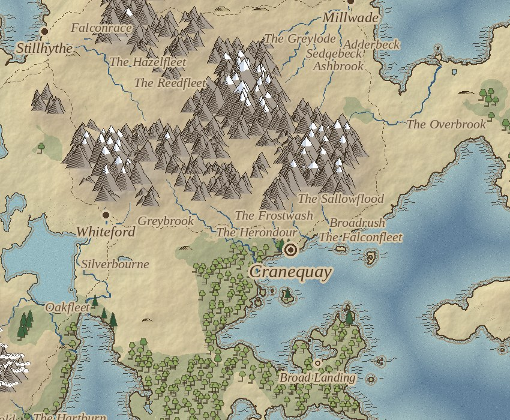
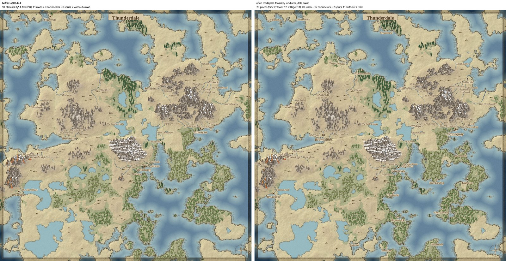

Since March I've been building Living Legends, a role-playing game that runs on the D&D 5e rules (the open SRD). The main design rule is that the rules engine makes every decision and the language model only writes the narration. Rolls, how much a character trusts you, which secrets they'll give up: all of it is worked out in code, and it replays exactly from a seed. The model gets the outcome and a list of what it's allowed to say. It can't invent a fact or hand you a secret you didn't earn.
Each character is built from tags like STUBBORN, INNKEEPER and PROTECT_LOVED_ONES, which shape how they act and make checks against them easier or harder. Their secrets sit behind harder and harder checks, and those get easier as the character comes to trust you. If you keep trying the same approach, each repeat makes the next roll 2 points harder and costs you some of their trust. For now I've kept the scope small on purpose: one town of about a thousand people and the countryside around it.

Thunderdale, one of the generated worlds: 26 places (2 cities, 11 towns and 13 market towns) and 53,170 people, about 150 km across.
The map
The world map is generated, then drawn to look hand-inked. A heightmap becomes the continents. Rivers start in the snowfields and join up on their way to the sea. The number of towns depends on how much land there is, at roughly the population density of England around 1300, and each town is sized by its rank. Roads avoid climbing where they can and merge when they're headed to the same place, and where three roads cross, a town grows at the junction. A lot of my time on the map has gone into the mountains: the hatching, how thick the outlines are, and keeping trees off them.

Close up: hatched mountains with snow caps, forests coloured by type, a ringed dot for a city and plain dots for towns.

Salt Gate, a town that grew where three roads meet.

The same world before and after I started sizing towns by land area. Ten places became twenty-five, and the new ones got roads to their neighbours.
There's also an interactive version of the map. Hover over a town to see its name, or click it for its population and the roads that reach it.
How it gets built
Most of the day-to-day work is done by two AI agents. The first is a playtester that runs on a local language model. It plays the game on its own, talking to characters, making checks and getting into fights, and it writes down where it got stuck or confused. The second is a fixer, Claude Code. It takes those notes one at a time and turns each into a change with a test, on its own branch. The playtester never touches the code and the fixer never plays, so neither one judges its own work. Merging into the main branch is still my job. Since March that's added up to about 1,700 commits and more than 700 test files.
Next up is the goal I picked the small scope for: getting one town, with its 41 trades and 60 named characters, playable from start to finish.